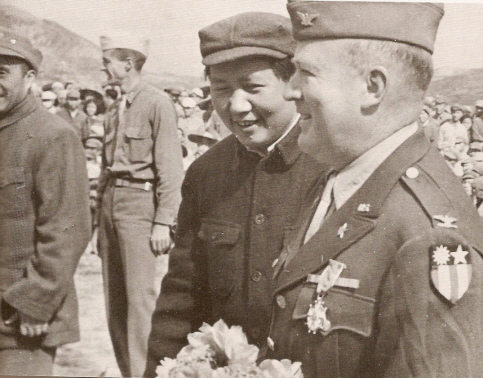
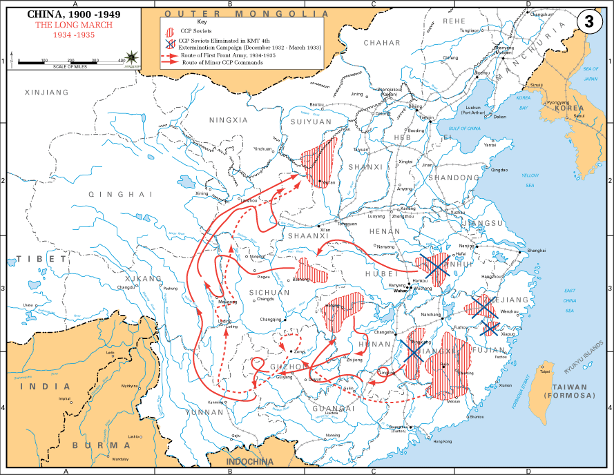
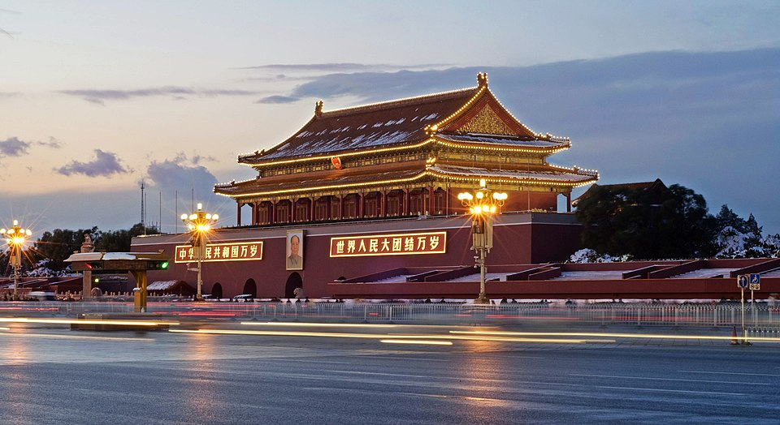

⏱️ 10초 카드 · 중국 혁명·냉전 (1893~1976)
중화인민공화국 수립대장정한국전쟁 참전대약진·문화대혁명
여는 질문 — 나라를 세운 공과 큰 비극을 부른 잘못을, 어떻게 함께 기억해야 할까?
이름
한국어마오쩌둥
원어毛澤東
실제 발음마오쩌둥
로마자Máo Zédōng
영어권Mao Zedong
별칭모택동
왜 이 사람인가
가난한 농민의 나라를 하나로 모아 새 중국을 세운 지도자이자, 잘못된 정책으로 수천만의 희생을 부른 사람이에요. 한 지도자의 결정이 수천만의 삶을 좌우한다는 걸 가장 크게 보여 주죠 — 그리고 한국전쟁에서 우리 역사와도 직접 얽혀요.
생애
오랜 내전 끝에 1949년 중화인민공화국을 세운 지도자예요. 가난한 농민의 나라를 하나로 모았다는 평가를 받아요.
한국전쟁 때 북한이 밀리자 '인민지원군'을 보내 전쟁의 흐름을 바꿨어요. 한반도에서 중국과 미국이 정면으로 맞붙은 셈이죠.
그러나 이후 그가 밀어붙인 정책(대약진운동·문화대혁명)으로 수천만 명이 굶주리거나 희생되는 큰 비극도 있었어요.
자료로 보기 — 유묵·사진



남긴 말
“권력은 총구에서 나온다.”
무력으로 권력을 잡는다는 그의 현실 인식을 드러내는 유명한 말이에요. 오랜 내전 끝에 그가 나라를 세운 방식이기도 하죠. · 출처: 마오쩌둥(1938)
“혁명은 손님을 초대한 만찬이 아니다.”
혁명이 우아하고 점잖은 일이 아니라 격렬하고 폭력적인 과정임을 인정한 말이에요 — 그가 택한 길의 성격을 보여 주죠. · 출처: 마오쩌둥, 〈후난 농민운동 보고〉(1927)
연표
- 1893출생
- 1949중화인민공화국 수립
- 1950한국전쟁 참전(인민지원군)
- 1958~대약진운동
- 1966~문화대혁명
- 1976사망
후난의 농민에서 새 중국의 주석으로
시골 마을에서 시작해 1만 리 행군을 거쳐 베이징 천안문에 서기까지, 한 혁명가의 긴 길이에요.
현재 지도 위 표시예요. 굵은 선이 그 유명한 '대장정' — 죽음을 무릅쓴 행군이 그를 지도자로 만들었어요.
빛과 그림자나라를 세운 지도자이자, 잘못된 정책으로 엄청난 희생을 부른 사람 — 한 지도자의 결정이 수천만의 삶을 좌우한다는 걸 보여줘요.
더 깊이 (고등·일반)
농민의 나라를 모으다
가난한 농민의 아들로 태어난 그는, 농민을 혁명의 주인공으로 봤어요. 오랜 내전 끝에 1949년 중화인민공화국을 세우며 '중국이 일어섰다'고 선언했죠.
대장정
세력이 위기에 몰렸을 때, 그는 1만 km가 넘는 행군(대장정)으로 군대를 살려 냈어요. 엄청난 희생 속에 살아남은 이 행군은 그를 혁명의 지도자로 만들었죠.
한국전쟁 참전
1950년, 한국전쟁에서 북한이 밀리자 그는 '인민지원군'을 보냈어요. 한반도에서 중국과 미국이 정면으로 맞붙은 셈이죠 — 인천상륙으로 뒤집힌 전세가 다시 한 번 요동쳤어요.
대약진운동의 비극
그는 단숨에 나라를 부강하게 만들겠다며 '대약진운동'을 밀어붙였어요. 그러나 무리한 정책과 거짓 보고가 겹쳐, 수천만 명이 굶어 죽는 끔찍한 기근이 일어났죠.
문화대혁명
권력을 다시 잡으려 그는 '문화대혁명'을 일으켰어요. 젊은 홍위병들이 '낡은 것'을 부순다며 스승과 어른, 문화재를 공격했고, 나라 전체가 큰 혼란과 상처에 빠졌죠.
사람의 그물 — 함께 읽을 인물
이 인물이 나오는 이야기
더 공부하기 — 여기서 출발하세요
📚 책으로
- 마오 — 알려지지 않은 이야기들 ↗공과 과를 함께 파헤친 평전.
- 중국 현대사 ↗혁명에서 대약진·문혁까지의 큰 흐름.
📜 1차 사료
- 마오쩌둥 (브리태니커) ↗생애와 평가를 정리한 신뢰 자료.
🎬 영상으로
- 다큐 — 마오쩌둥의 흥망 ↗ · Timeline - World History중국을 세우고 비극을 부른 그의 생애를 다룬 영어 다큐.
📍 가 볼 곳
- 사오산 (후난성)그가 태어난 농촌 마을.
- 톈안먼 광장 (베이징)1949년 그가 새 나라를 선포한 곳.